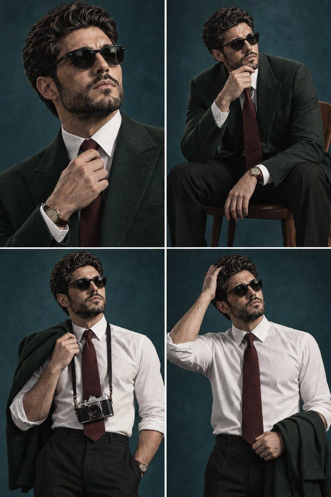

Vintage Editorial Portrait Collage
WRD-015WardrobeGPT Image 2by AijazSeptember

A sophisticated prompt for creating a 2x2 collage of a male model in a 1970s corporate aesthetic, featuring forest green suits and moody studio lighting.
Prompt
Create a cinematic 2×2 editorial portrait collage of the same fictional young male model, with consistent facial features and hairstyle across all four panels. He has neatly styled dark side-parted hair, sharp masculine features, clean-shaven face, and a serious, thoughtful expression. Moody {argument name="era" default="1970s-inspired"} corporate fashion photography, {argument name="background color" default="teal-blue"} studio background, dramatic directional lighting, subtle film grain, deep shadows, muted colors, realistic skin texture, high-end fashion editorial aesthetic.
Top-left: close-up portrait, wearing a {argument name="suit color" default="dark forest-green"} tailored suit, white dress shirt and burgundy tie, adjusting his tie with one hand, vintage wristwatch visible.
Top-right: seated on a wooden chair, leaning forward thoughtfully with one hand near his chin, wearing the same green suit, white shirt and burgundy tie, black trousers, wristwatch visible.
Bottom-left: standing confidently with the green suit jacket draped over one shoulder, sleeves rolled up, white shirt and burgundy tie, vintage film camera hanging around his neck, black trousers.
Bottom-right: standing in the white shirt and burgundy tie with sleeves rolled up, green suit jacket over one arm, one hand running through his hair, contemplative expression.
Symmetrical 2×2 grid layout, thin white dividers between panels, consistent character identity, realistic photography, 50mm lens look, shallow depth of field, cinematic lighting, subtle analog film texture, sophisticated vintage atmosphere, ultra-detailed, photorealistic, 4K.Tags: close-up, 35mm film, fashion, portrait